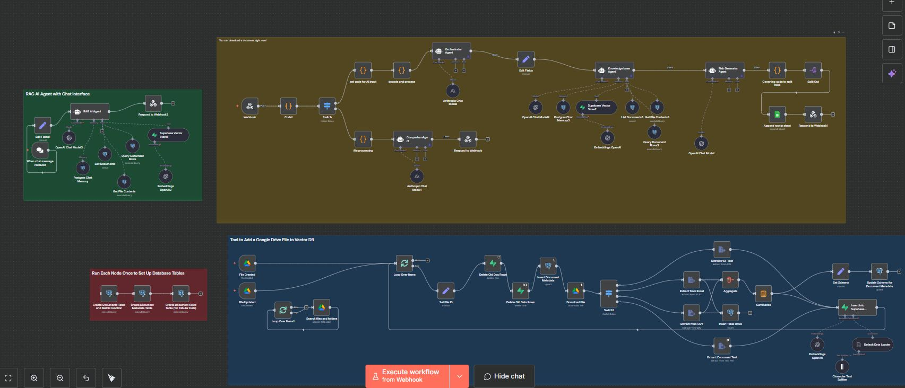
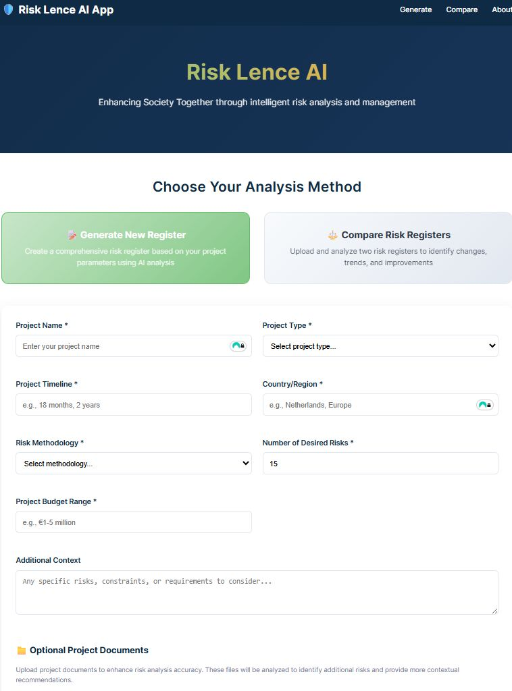

Built a retrieval-augmented generation (RAG) agent on n8n that turns a project description into a full risk register — cutting a 6-hour manual task down to 1 hour, review included.
Every new infrastructure project starts with a blank risk register. The standard process — manually digging through old registers, copy-pasting relevant risks, then brainstorming new ones — took around 6 hours before a project manager could even start reviewing.
I built an AI agent on n8n with custom connections to a structured database of known infrastructure risks. Given a description of the new project, the agent retrieves relevant precedent risks and generates a draft risk register — causes, mitigations, and all — directly into an Excel file ready for a risk manager's review.


What used to take 6 hours of manual drafting now takes about 1 hour, including human review. The agent doesn't replace the risk manager's judgment — it removes the blank-page problem and the repetitive copy-paste work that came before it, freeing reviewers to focus on judgment calls instead of data entry.